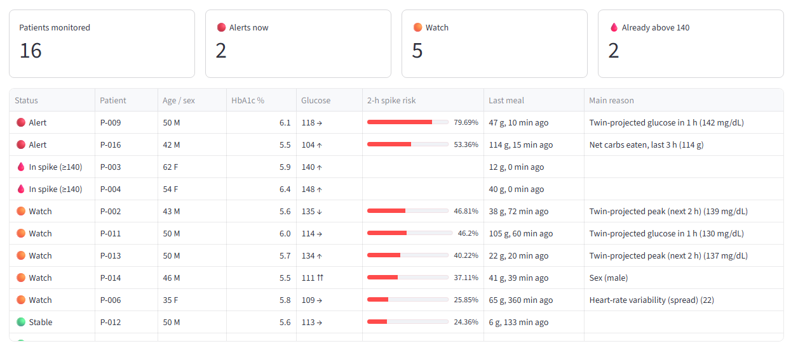
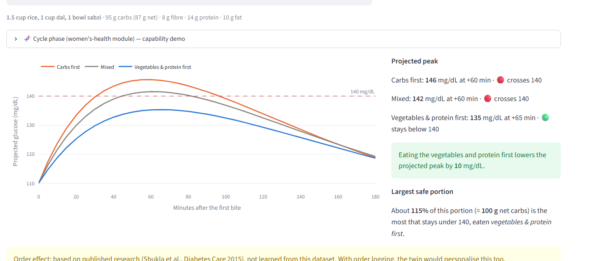
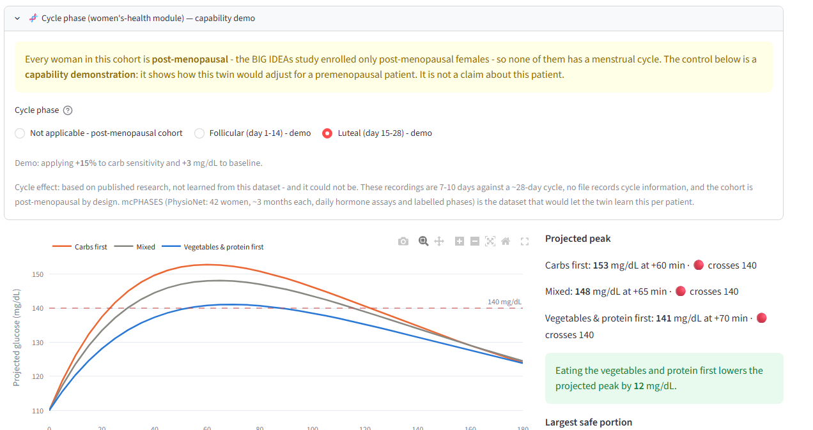

Happiest Health · Digital Twin Challenge 2026 · Phase 1
GlucoTwin
A patient digital twin that warns of glucose spikes two hours ahead by fusing health
records with wearable data — and tells the doctor what would change the outcome.
Varsha B S Acharya · Amogh P · Team Uno · RV University, Bengaluru
SayHi. I'm Varsha, from RV University in Bengaluru. This is GlucoTwin. It's my Phase 1 submission for the Happiest Health Digital Twin Challenge.
The problem
136 million Indians have prediabetes.
Most of them are still reversible.
136M
with prediabetes — still modifiable
2×
times a year a doctor sees them
ICMR-INDIAB national survey, Lancet Diabetes & Endocrinology, 2023.
SayLet me start with the number that made me build this. About 101 million people in India have diabetes. Another 136 million have prediabetes. That second group is the one I care about. They're not diabetic yet, and for most of them it can still be turned around. The early warning sign is the spike you get after a meal.
The gap
A CGM tells you about a spike.
It just tells you too late.
- A doctor sees the patient twice a year, and gets one HbA1c — an average over three months.
- A continuous glucose monitor reports the spike once it is already happening. By then they have already eaten.
- A simple CGM trend alarm does warn early — at 6.8 false alarms per day. Nobody keeps listening to that.
Can we warn two hours ahead — and say what to do about it?
SaySo here's the problem. A doctor sees you twice a year, and gets one HbA1c — a three-month average. Everything in between, they don't see. A glucose monitor is better, every five minutes. But it only tells you about a spike once it's happening. By then you've eaten. You could warn earlier by following the trend. I tried. It catches nearly every spike, but gives you about seven false alarms a day. Nobody listens to that. So I wanted two things. Warn two hours early. And say what to do about it.
The system
Static record + live sensors → a twin per patient
SayHere's how it fits together. On the left, two kinds of data. The health record — age, labs, diagnoses, medicines. That's who the patient is. And live sensors — a glucose monitor every five minutes, a wristband, and a meal log. That's what they're doing now. Both get lined up on the same five-minute grid. The health record goes in as a FHIR bundle, which is the standard India's ABDM uses. Then two things read it. A twin, which I'll come to. And a model that predicts the spike. On the right is what the doctor sees: a risk score, the reason for it, and a what-if tool. That last one is the point. A model tells you something will happen. A twin lets you ask what if.
Data provenance
What is real, and what is not
| Stream | Source | Real or synthetic |
|---|
| CGM, heart rate, HRV, food logs | BIG IDEAs Lab, PhysioNet (open access) | Real, de-identified |
| Sex, HbA1c | same, Demographics.csv | Real, de-identified |
| Age, labs, diagnoses, medications, family history, genetics | Generated by src/ehr.py as FHIR R4 | Synthetic |
| Eating-order effect | Shukla et al., Diabetes Care 2015 | Published research |
| Indian meal menu | Typical servings | Approximate |
16 participants · 8–10 days each · 38,115 five-minute rows · 22% followed by a spike.
No real patient record is used anywhere (DPDP Act / HIPAA sandbox).
SayI want to be clear about what's real, because this is where people oversell. The glucose, heart rate and food logs are real, from a public dataset called BIG IDEAs. Sixteen people, eight to ten days each. Their sex and HbA1c are real too. Everything in that third row I generate — age, labs, diagnoses, medicines. The rules don't allow real patient records. But I match them to each person's real HbA1c. That's about 38,000 rows. Twenty-two percent are followed by a spike. Remember that number — it's what guessing would score.
The unglamorous part
Three devices. Three clocks.
- Wristband vs CGM. Heart rate and glucose are both quiet at night. The shift that lines up the two 24-hour patterns is the offset. Here: 0 hours — they agreed.
- Meal log vs CGM. Glucose should rise 40–80 min after carbs. Participant 016 was logging meals 105 minutes late — corrected.
- Coverage. Participant 015's entire food log falls outside their CGM recording → marked unavailable, meaning "unknown", not "never ate".
Tested on a deliberately broken copy: every offset recovered exactly, AUROC back to within 0.01.
SayNow something boring that almost broke this. Three devices: a glucose monitor, a wristband, a phone. Each keeps its own time, and in a public dataset those times get shifted for privacy. If they don't line up and you don't check, your model quietly learns nothing. So I check, and print a report. One person logged meals 105 minutes late. Another's food log didn't overlap their glucose data at all, so I mark it unknown — not 'they ate nothing'. Tell a model someone ate zero carbs when you don't know, and you've taught it something false.
Feature design
A feature at time T may only use data from time T or earlier
- ~60 features — CGM dynamics, wearables, sleep, meals, and 17 from the health record.
- Person-relative wearables. Resting heart rate varies more between people than within one. Raw values teach a model who someone is — which transfers to a new patient as nothing.
- Right-closed bins. A bin labelled 12:05 holds data up to and including 12:05, so a prediction "at 12:05" has never seen 12:06.
- Every rolling statistic is past-only — even the resting heart rate behind the activity estimate.
This is the difference between a glucose model that works and one that is cheating without its author realising.
SayAbout sixty features go in. Two decisions matter. First, every wristband feature is measured against that person's own normal, not raw. Resting heart rate varies more between people than within one. Feed in raw numbers and the model mostly learns who someone is — which looks great in testing and is useless on a new patient. Second, nothing sees the future. A reading at twelve-oh-five uses data up to twelve-oh-five, not a second more. That sounds obvious. It's the difference between a model that works and one that's cheating without you realising.
The twin
Four numbers are the patient
- k — carb sensitivity: mg/dL per gram of net carbs
- tp — minutes to peak after eating
- a — how much activity helps them
- tr — how fast they recover
glucose = baseline
+ k × carbs, peaking at tp
− a × recent movement
+ leftover, fading over tr
Starts at the population average, then re-fitted every day on that patient's own past data only.
Only its forecasts feed the ML model — the four parameters are constant per person and would act as an ID card.
SaySo, the twin. For each person, it's four numbers. How much their glucose goes up per gram of carbs. How quickly they peak. How much exercise helps them. And how fast they come back down. That's it. Four numbers, and they're different for every person. Everyone starts at the population average. Then every day it refits those numbers using only that person's own past data. So it learns you, a day at a time. One thing I deliberately left out: the four numbers don't go into the prediction model. They don't change much within a person, so the model would just use them as a name tag.
Validation
Every number comes from a model that never saw that patient
- Leave-one-subject-out. Train on 15, test on the 16th, repeat 16 times.
- Random row splits put the same person in train and test and inflate every score. Don't.
- Alert thresholds chosen by inner cross-validation on the training patients only — nothing about the test patient leaks into the model or the alarm.
SayBefore the results, how I tested them. I train on fifteen people and test on the sixteenth. Then I repeat that sixteen times. So every number you're about to see came from a model that had never seen that patient. If you shuffle rows randomly instead, the same person ends up in training and testing, and your scores look much better than they are.
Results · leave-one-subject-out
Each row adds one more data stream
| Data used | AUROC | AUPRC | Spikes warned | Median lead | False alarms/day |
|---|
| Rule: CGM trend extrapolation | 0.612 | 0.308 | 99% | 75 min | 6.8 |
| CGM only | 0.681 | 0.407 | 91% | 10 min | 1.7 |
| + Wearables | 0.667 | 0.375 | 88% | 15 min | 2.3 |
| + Meal log | 0.708 | 0.469 | 88% | 45 min | 2.3 |
| + EHR (full fusion) | 0.728 | 0.478 | 86% | 45 min | 2.0 |
| + Digital twin forecasts | 0.725 | 0.473 | 89% | 45 min | 2.2 |
AUPRC baseline (random) = 0.22. Original locked run reported 0.733; re-running on
LightGBM 4.7 / pandas 3.0 gives 0.728 — gradient boosting is not bit-reproducible across versions.
SayHere are the results. Each row adds one more kind of data. The first row is the simple trend alarm: 0.612, and almost seven false alarms a day. Glucose alone with machine learning, 0.681. Add the meal log and it jumps to 0.708 — the biggest single jump here. Add the health record, 0.728, with about two false alarms a day. So 0.612 up to 0.728, false alarms seven a day down to two, and it catches 86 percent of spikes about 45 minutes ahead.
Results
Fusion helps. Wearables alone don't — and I'll say why.
Adding wearables drops the score because the accelerometer files (~13 GB) weren't downloaded —
activity is estimated from heart rate, which also rises with stress and after meals. They still contribute inside the full fusion.
SayTwo honest things here. Adding the wristband made it slightly worse. I didn't download the movement sensor files — thirteen gigabytes — so I estimate activity from heart rate, which also rises when you're stressed or eating. It's a noisy stand-in. And adding the twin's forecasts didn't improve the score either. 0.725 against 0.728, which with sixteen people is noise. I'm telling you rather than hiding it, because the twin's value isn't the score. It's what you can do with it.
The doctor's view
Sixteen patients. Two about to spike.

P-009 · 80%
"Twin-projected glucose in 1 h — 142 mg/dL." He ate 47 g of carbs ten minutes ago.
Reasons are SHAP values from the model that never saw that patient, turned into plain language.
The two marked in spike are already above 140 — no alert, because the job is predicting
onset, not announcing what the CGM already shows.
SayThis is what a doctor sees. Sixteen patients, sorted by risk. The clock in the sidebar replays the recorded week as if it were live. Right now, day three, eight in the evening. Two in red, five on watch. Patient 009 is at eighty percent. And this last column tells you why. His twin expects him at 142 within the hour, and he ate 47 grams of carbs ten minutes ago. Those reasons come out of the model itself. I just put them in plain English. The two marked 'in spike' are already over 140. No alert, on purpose — the job is predicting it starting, not announcing what the sensor already shows.
New in this build
A twin that learns from every meal
- The daily twin re-fits once a day. But a patient doesn't live in days — they live in meals.
- Before each meal: predict the peak, from parameters fitted on that person's earlier meals only.
- After the meal: compare with the real CGM peak.
- Then re-fit, so the next meal is predicted by a slightly better twin.
No leakage, and it is tested, not asserted: a script deletes future meals and future glucose
and checks neither the forecast nor the fitted parameters move. 192 + 53 probes, all unchanged.
SayThis next part is the newest bit, and my favourite. The twin I described refits once a day. But people don't live in days. They live in meals. So this version learns meal by meal. Before you eat, it predicts your peak, using only the meals it has already seen from you. After you eat, the sensor says what actually happened. Then it adjusts.
Results · 431 real meals, 15 participants
The gap widens the more of you it sees
32.5
mg/dL — generic population twin
25.2
mg/dL — learns each meal (−22%, CI 4.1–10.6, helped 13/15)
+0.12
mg/dL from food composition — CI includes zero. Did not help.
Say431 real meals, fifteen people. A generic twin gets the peak wrong by about 32 and a half. The one that learns you, by 25. That's 22 percent better, and it helped thirteen of fifteen. Now the honest part. I also tried using fibre, fat and protein from each meal. That made basically no difference — about a tenth of a point, easily chance. It didn't work, and I'm showing you instead of quietly dropping it.
Plan a meal · P-005, day 3, 16:00
"If she eats the dal before the rice, she won't spike"

The alarm had just called her 24%, green, stable. Nothing here needed a doctor.
Rice first · 146
crosses 140
Dal & sabzi first · 135
stays under
Her twin: k = 0.44 mg/dL per g, peak at 65 min — learned from 21 of her own meals.
SayThis is the bit I most want you to see. Look at her status first. Twenty-four percent. Green. Stable. The alarm says nothing's wrong. She last ate five hours ago. But she's about to eat rice, dal and sabzi, and her twin has learned her from twenty-one of her own meals. Rice first, it expects 146. Over the line. Dal and sabzi first, 135. She stays under. Same food, same person, same afternoon — and the alarm had already said she was fine.
Not learned from this data
Eating order is a published constant, and the UI says so
- The BIG IDEAs food logs record what and when — never in what order. There is nothing here to learn it from.
- Shukla AP et al., Diabetes Care 2015;38(7):e98–e99 — crossover, n = 11 with type 2 diabetes, reporting 29–37% lower glucose when vegetables and protein came first.
- I apply 25% — deliberately below their figure, because eleven people eating a Western meal is not this cohort.
- One named constant:
config.ORDER_PEAK_MULTIPLIER. Change it or switch it off.
SayNow I have to be straight with you about this one, and the app says it on screen too. The eating-order effect is not something I learned from this data. These food logs record what people ate and when, but never in what order. So I can't learn it. It comes from a published study — eleven people with type 2 diabetes. They found 29 to 37 percent lower glucose when vegetables and protein came first. I use 25 percent, which is deliberately lower than what they found. It's one number in my config file. You can change it or switch it off.
Women's-health module
Insulin sensitivity falls in the luteal phase — and this cohort can't show it

The BIG IDEAs study enrolled only post-menopausal females. All 9 women here are
post-menopausal. None has a cycle.
So it ships as a labelled capability demo, behind that warning, defaulting to
"Not applicable".
135 → 141
vegetables-first, follicular → luteal. The same advice stops working.
mcPHASES (PhysioNet, 42 women, ~3 months, daily hormone assays) is the dataset that
would let the twin learn this.
SayOne more feature, with a caveat I'd rather say than bury. In the second half of the menstrual cycle, your body handles sugar worse. So the same meal peaks higher. For a tool aimed at prediabetes in India, where most people screened are women, that matters — and most models ignore it. But read the warning. This study only enrolled post-menopausal women. None of them has a cycle. So this tells you nothing about this patient. It's a demonstration of what the twin would do for a younger patient, and it's labelled that way. With that said — vegetables-first was 135, under the line. In the luteal phase it's 141. The same advice stops working.
A negative result, reported
I re-ran everything on the 9 women alone
| Data used | AUROC — all 16 | AUROC — 9 women |
|---|
| CGM only | 0.681 | 0.607 |
| + Meal log | 0.708 | 0.667 ← best here |
| + EHR (full fusion) | 0.728 | 0.654 |
| + Digital twin | 0.725 | 0.655 |
Full fusion falls to 0.654, and the health record makes it worse. That's a
cohort-size effect, not a finding about women — nine people, one with no usable food log.
It's why the headline keeps all 16.
SayI also ran the whole thing again using only the nine women. The score drops from 0.728 to 0.654. And the health record actually makes it worse, not better. So the 'every data stream helps' result doesn't hold up here. But that's about the size of the group, not about women. It's nine people, and one of them has no usable food log. I ran it because that's the honest way to answer 'should this be a women's tool', and the answer is that this dataset is too small to tell.
Limitations
Arguing against my own project
- Sixteen people. Feasibility, not clinical validity.
- The health record is synthetic apart from sex and HbA1c — so the EHR result demonstrates the pipeline, not real records.
- Activity and sleep are estimated from heart rate, not accelerometry or polysomnography.
- Unlogged meals can't be anticipated.
- Eating order and cycle phase are published constants, labelled on screen every time.
- Food composition didn't help — reported as the negative result it is.
SayLet me argue against my own project. Sixteen people shows this can work. It doesn't show it works clinically. The health record is made up, apart from sex and HbA1c. Sleep and activity are estimated from heart rate, not measured. If someone doesn't log a meal, I can't warn them. And the eating order and cycle effect come from published research, not this data — the app says so every time.
What it does show
Not "she will spike" — but "if she eats the dal first, she won't"
0.612→0.728
AUROC, glucose alone → full fusion
6.8→2.0
false alarms per patient-day
−22%
peak error, twin learning meal by meal
Future work: real EHRs through ABDM/FHIR consent flows · a cycle-aware twin learned
from mcPHASES · federated on-device training · hypoglycaemia alerts.
Decision support, not a prescription. Not a medical device. Deployment would need
prospective validation and regulatory review.
SaySo what does it show. Combining a health record with sensor data beats glucose alone — 0.612 up to 0.728 — and cuts false alarms from seven a day to two. A twin can learn a person meal by meal and get 22 percent better at their peaks. And you get something that doesn't just say 'she's going to spike', but 'if she eats the dal before the rice, she won't'. This is decision support. Not a prescription, and not a medical device.
▶ Play the 21-second clip now
GlucoTwin in twenty-one seconds
- Switch to
brag-output/brag.mp4 and play it full screen, with sound.
- Then come straight back here and move to the live demo.
DoAlt-tab to the video. Play it full screen with sound. Come back when it ends.SayBefore I show you it running, here's the whole thing in twenty seconds. Everything in that clip is the real dashboard. Let me show you it live now, so you can see it's not a video trick.
→ Switch to the dashboard
Live demo — five minutes
- Ward overview · day 3, 20:00 · cohort filter → Women 9
- Patient twin → P-005 · day 3 · 16:00 · reasons + timeline
- Plan a meal → Rice + dal + sabzi → the three orders → largest safe portion
- Build your own / Describe it in words → After the meal → meal 7
- Cycle phase → read the warning → Luteal
- Model performance → ablation + per-meal table
DoAlt-tab to Chrome. Follow the live-demo script.SayLet me show you it running. Nothing here is pre-recorded — this is the dashboard on my machine.
Thank you
GlucoTwin
Code, data provenance, every result and the leakage test are in the repository.
Varsha B S Acharya · Amogh P · Team Uno · RV University, Bengaluru
github.com/varshabachar/Uno_RVUniversity
Data: BIG IDEAs Lab Glycemic Variability & Wearable Device Data, PhysioNet (ODC-By)
SayThat's it. Thanks for watching. The code, the data, every result and the leakage test are all in the repository.
1 / 23
→ next · ← back · N notes · F fullscreen